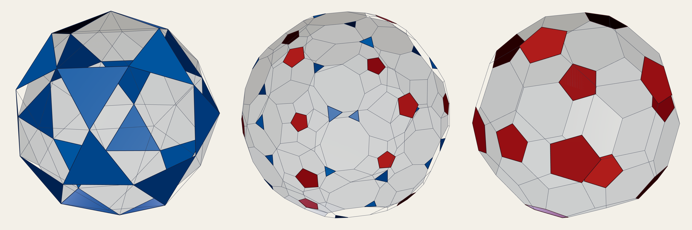

Version 1. First publication.
Take a solid and look for its Vacuus (#87): the flat slices through its centre that carry its faces. The octahedron's twelve edges lie on three squares through its centre; the cube's edges lie on no such slice at all. In four dimensions the same question asks which 2-dimensional faces lie in a 3-dimensional slice through the centre. This paper answers it for the Queens, the 600-cell (the White Queen) and the 120-cell (the Red Queen) of #63, #65 and #76, for the stages between them, and for every polytope built from a reflection group, by one rule read off the group's Coxeter chain.
A finite reflection group in n dimensions is generated by reflections in n mirrors whose unit normals α1, …, αn are its simple roots; the mirrors of the group are the hyperplanes orthogonal to its roots, and every root is a combination of simple roots whose coefficients are all ≥ 0 or all ≤ 0 (Humphreys 1990, §1.3). Its Coxeter diagram joins nodes i, j whose mirrors meet at angle π/m, m ≥ 3, by a bond labelled m. The groups here have diagrams that are chains: B3 4–3 (the cube), H3 5–3 (the icosahedron), A4 3–3–3 (the 5-cell), B4 4–3–3 (the tesseract), F4 3–4–3 (the 24-cell) and H4 5–3–3 (the Queens).
Wythoff's construction places a seed point x with labels λi = αi · x ≥ 0 and takes the hull of its images. The nodes with λi > 0 are the ringed nodes. Its faces are the images of the faces FJ = hull(WJ x), where WJ is generated by the reflections of a node set J whose every connected piece contains a ringed node (Coxeter 1973; Champagne, Kjiri, Patera and Sharp 1995). The orbit study of 11 November read these seeds back from the corners of DICTO's solids: the Queens' path is the seed sliding along the H4 chain, from the 120-cell (1, 0, 0, 0) through the truncated 120-cell (1, 1, 0, 0), the bitruncated 600-cell (0, 1, 1, 0) and the truncated 600-cell (0, 0, 1, 1) to the 600-cell (0, 0, 0, 1); the golden loop of DICTONIC is the B3 seed (0, x, 1).
Proof. The face FJ lies in the affine space x + span(αJ), so the hyperplane through the centre that contains it is span(x, αJ), and its other faces of type J are images of FJ, which carry mirrors to mirrors. That hyperplane is a mirror exactly when its normal is a root, that is, when some root r is orthogonal to x and to every αj, j ∈ J. Write r = Σ cl αl, all cl of one sign. Then r · x = Σ cl (αl · x) after expressing x in the basis dual to the simple roots, which is Σ λl cl; with λl > 0 on the ringed nodes and every cl of one sign, this vanishes exactly when cl = 0 on every ringed node, so that r is a root of the unringed nodes. ∎
The law was checked against direct measurement, the normal of span(x, αJ) compared with every root, for every seed of zeros and ones and every face type in A3, B3, H3, A4, B4, F4 and H4: 228 cases, no disagreement (mirror_law.py).
Proof. A regular polytope has one ringed node at an end of the chain, node 1 say, and one face type J = {1, 2} (in four dimensions); node 4 is unringed and α4 is orthogonal to α1 and α2. So every face lies on a mirror. Every mirror carries the same number of faces because the group moves any mirror to any other (its roots form one orbit), so 1200 / 60 = 20 and 720 / 60 = 12; that no other slice carries a face, and that both Queens use all 60 mirrors, was checked by computing the central hyperplane of every face (mirror_check.py). ∎
Proof. The face types are {1, 2}, {2, 3} and {3, 4}; the unringed nodes 1 and 4 are not joined, so their only roots are ±α1 and ±α4. α4 is orthogonal to α1 and α2, and α1 to α3 and α4, so the end faces lie on mirrors (Theorem 1); neither is orthogonal to both α2 and α3, since node 1 is joined to 2 and node 4 to 3, so the middle faces lie on none. A middle face lies between a cell of type {1, 2, 3} and one of type {2, 3, 4}; they are congruent when the chain reads the same from both ends (A4 3–3–3, F4 3–4–3) and differ otherwise. ∎

| stage (seed) | 2-faces | on the 60 mirrors, on each | on no mirror |
|---|---|---|---|
| 600-cell (0, 0, 0, 1) | 1200 triangles | 20 triangles | none |
| truncated 600-cell (0, 0, 1, 1) | 2400 triangles, 1200 hexagons | 20 hexagons | the 2400 triangles |
| bitruncated 600-cell (0, 1, 1, 0) | 1200 triangles, 720 pentagons, 2400 hexagons | 20 triangles and 12 pentagons | the 2400 hexagons |
| truncated 120-cell (1, 1, 0, 0) | 2400 triangles, 720 decagons | 12 decagons | the 2400 triangles |
| 120-cell (1, 0, 0, 0) | 720 pentagons | 12 pentagons | none |
Each row follows from Theorem 1 (for the truncated 600-cell, the unringed nodes 1 and 2 give the roots of the pentagon group, and α1 is orthogonal to the hexagons' nodes 3, 4 but no root of nodes 1, 2 is orthogonal to the triangles' nodes 2, 3) and was measured face by face (vacuus_queens.py: every face's central hyperplane, grouped and classed under all 14 400 symmetries). The faces on no mirror are scattered: computed, they lie two on each of 1200 central slices. At the bitruncated 600-cell the hexagons on no mirror are the faces where a truncated tetrahedron meets a truncated icosahedron: the faces of the exchanges in #104's scutoid tissue. The faces between like cells stand on the mirrors; the faces of exchange stand off them.
| chain | middle (0, 1, 1, 0) | on the mirrors | on no mirror (middle bond) |
|---|---|---|---|
| A4 3–3–3, 10 mirrors | bitruncated 5-cell: 30 corners, 10 truncated tetrahedra | 20 triangles | 20 hexagons |
| B4 4–3–3, 16 mirrors | bitruncated tesseract: 96 corners, 8 truncated octahedra, 16 truncated tetrahedra | 32 triangles (between truncated tetrahedra), 24 squares (between truncated octahedra) | 64 hexagons, between the two kinds |
| F4 3–4–3, 24 mirrors | bitruncated 24-cell: 288 corners, 48 truncated cubes | 192 triangles | 144 octagons |
| H4 5–3–3, 60 mirrors | bitruncated 600-cell: 3600 corners, 120 truncated icosahedra, 600 truncated tetrahedra | 1200 triangles, 720 pentagons | 2400 hexagons, between the two kinds |
Each middle was built from its seed and its faces measured (vacuus_middles.py; the H4 row repeats Section 3 as a control). In the self-reading chains A4 and F4 every cell is alike, yet the middle-bond faces still leave the mirrors: the law belongs to the bond, not to the cells.
Proof. Node 1 is the only unringed node; α1 is orthogonal to α3 (nodes 1 and 3 are not joined) but not to α2. ∎ This is the split seen in the 3D Vacuus of the DICTO 1:2 Truncated Octahedron (#105, Figure 4) and measured on the Icosaxes and the Unborn Axes: three discs of four edges, the other edges each on a central plane of its own with one partner.
DICTO: #63, #65, #76 (the Queens and their stages); #87 (the Vacuus); #104 Scutoid Tissues in Four Dimensions (the exchanges at the bitruncated 600-cell); #105 DICTO 1:2 Truncated Octahedron: The 4D Vacuus of the Permutohedron (Figure 4). H. S. M. Coxeter, Regular Polytopes, 3rd ed., Dover (1973); B. Champagne, M. Kjiri, J. Patera and R. T. Sharp, Description of reflection-generated polytopes using decorated Coxeter diagrams, Can. J. Phys. 73 (1995) 566–584; J. E. Humphreys, Reflection Groups and Coxeter Groups, Cambridge University Press (1990); N. Whitehead, Classifying regular polyhedra and polytopes using Wythoff's construction, arXiv:2001.09364. Checked for a prior statement of Theorem 1: DICTO's reference library (its cited, bridges and expansion lists; entries on Wythoff's construction and root systems: Moody and Patera 1993 only), and a web search for faces of Wythoff polytopes lying in reflection hyperplanes (results: Whitehead 2020 and general pages on uniform polytopes and Wythoff symbols; Champagne et al. 1995 named there, not read in full). Nothing found; the proof is short and may be known.